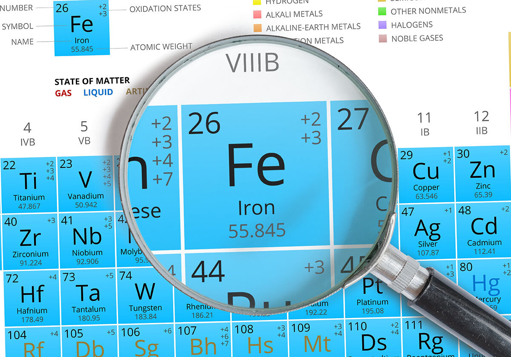
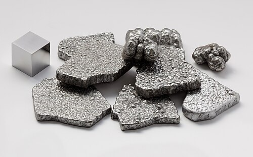
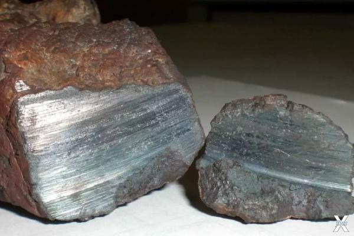

Железо
Желе́зо (химический символ — Fe, от лат. Ferrum) — химический элемент 8-й группы (по устаревшей классификации — побочной подгруппы восьмой группы, VIIIB) четвёртого периода периодической системы химических элементов Д. И. Менделеева с атомным номером 26. Простое вещество железо — это ковкий переходный металл серебристо-белого цвета с высокой химической реакционной способностью: железо быстро корродирует на воздухе при высоких температурах или при высокой влажности. В чистом кислороде железо горит, а в мелкодисперсном состоянии самовозгорается на воздухе.

Самые ранние изделия из железа (около 5000 до н. э.) найдены в Самарре (Северная Месопотамия) и Сиалке (Северный Иран). В раннем и среднем бронзовом веке (2-я половина 4-го – 3-е тыс. до н. э.) железные и биметаллические орудия и украшения (кинжалы, ножи, тёсла, кольца, обоймицы и др.) известны в Анатолии (Аладжа-Хююк), на юге Восточной Европы (ямная культурно-историческая область), в Саяно-Алтайском нагорье (афанасьевская культура). Они изготовлены из метеоритного железа с высоким содержанием никеля методом ковки. У кочевников раннего бронзового века изделия из железа связаны с элитными погребениями. В курганном могильнике ямной культурно-исторической области у села Болдырево в Оренбургской области (Россия) обнаружена серия изделий из железа, изготовленных из метеоритов разных типов. Обработка метеоритного железа ограничилась механическим воздействием с целью изменения формы, не была связана с процессом преобразования свойств (структуры, химического состава) веществ и не привела к возникновению металлургии железа, на это указывает и этимология сл

До 95 % железа выплавляют в виде чугуна и стали – важнейших конструкционных материалов в технике и промышленном производстве. Техническое железо служит материалом для сердечников электромагнитов, якорей электромашин, пластин аккумуляторов. Карбонильное железо используется в основном как катализатор. Радионуклиды 55Fe (период полураспада T1/2 2,73 года) и 59Fe (T1/2 44,51 сут) применяются в качестве изотопных индикаторов.

До середины 14 в. железо получали сыродутным способом. Железную руду восстанавливали древесным углём в горне (сыродутный процесс); в результате получали крицу (глыбу железа), из которой удаляли шлак и получали металл – сырьё для выковывания различных изделий. При более интенсивном дутье температура в горне повышалась, часть железа науглероживалась и превращалась в чугун, который из-за хрупкости не находил применения и считался отходом производства. К середине 14 в. относят возникновение доменного производства. Чугун стали использовать для отливки различных изделий, горн был реконструирован в шахтную печь («домницу»), а затем в доменную печь.